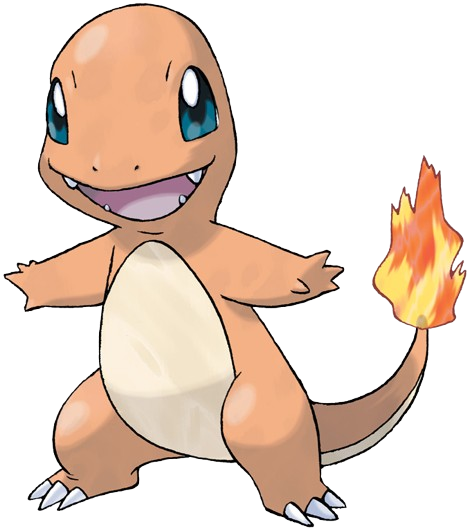

Bem vindo ao mundo Pokémon!
Criado originalmente no Japão, Pokémon é uma das franquias de entretenimento mais populares e influentes da história dos videogames. Seu universo é habitado por criaturas conhecidas como Pokémon, seres com características, habilidades e personalidades únicas, que convivem com os seres humanos em diferentes regiões do mundo. Desde seu surgimento, a franquia conquistou milhões de fãs ao redor do planeta, expandindo-se muito além dos videogames e alcançando outras mídias, como séries animadas, filmes, mangás, jogos de cartas colecionáveis e diversos produtos licenciados.
A ideia por trás de Pokémon surgiu a partir da infância de Satoshi Tajiri, desenvolvedor japonês e grande entusiasta da natureza e da exploração. Durante sua juventude, Tajiri costumava colecionar insetos e explorar ambientes naturais, atividade que acabou servindo de inspiração para a criação de um universo onde os jogadores pudessem capturar, colecionar e trocar criaturas. Com a ajuda de Ken Sugimori, responsável pelo design original de diversos Pokémon, e da desenvolvedora Game Freak, esse conceito começou a ganhar forma até se transformar em um dos projetos mais importantes da indústria dos jogos.
Ao longo dos anos, os jogos foram organizados em diferentes gerações, cada uma introduzindo novas regiões, personagens, mecânicas e espécies de Pokémon. Entre os mais conhecidos está Kanto, a cidade inicial dos primeiro jogos da franquia, os Pokémon Red e Blue. E é ai que a KantoWiki entra! Aqui, você poderá aprender mais sobre cada um desses pokémons iniciais, e assim ter o melhor progresso na sua campanha!
Escolha o seu pokémon inicial:

Bulbasauro
Um Pokémon do tipo Planta e Veneno conhecido pela semente que carrega em suas costas. Utiliza a energia solar para fortalecer seu crescimento e é capaz de liberar poderosos ataques vegetais.

Charmander
Um Pokémon do tipo Fogo conhecido pela chama que queima na ponta de sua cauda. Seu fogo está diretamente ligado à sua vitalidade, tornando-o um adversário bastante determinado em batalhas.

Squirtle
Um Pokémon do tipo Água conhecido por seu casco resistente e suas habilidades aquáticas. Utiliza seus poderosos jatos de água para atacar adversários e se defender durante as batalhas.
Comece uma batalha!
Entre em uma batalha simulada com um pokemon de sua escolha e teste as suas habilidades! Escolha entre Squirtle, Bulbasauro e Charmander e sinta na pele a emoção de uma batalha de verdade!